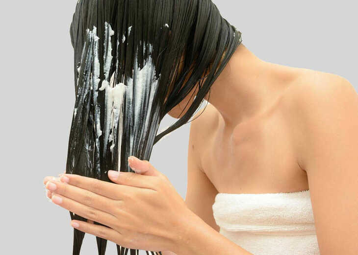
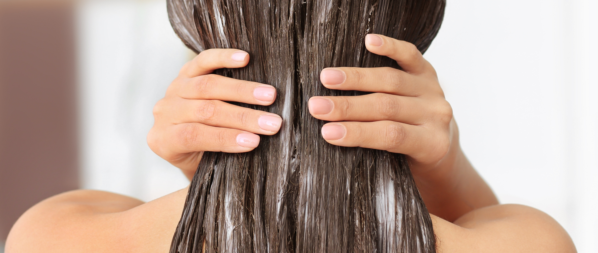
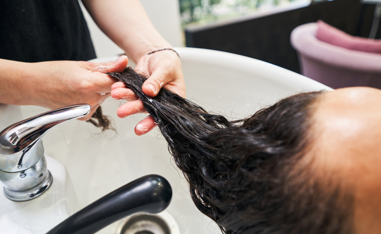

O QUE É?
Condicionar o cabelo é um passo essencial nos cuidados com os cabelos que envolve o uso de um produto conhecido como condicionador capilar. Este produto é projetado para ser aplicado após a lavagem com xampu e tem várias funções importantes para a saúde e aparência dos cabelos.

Aqui estão os principais aspectos relacionados ao condicionamento capilar:
Hidratação e Nutrição: O condicionador capilar contém ingredientes que ajudam a hidratar os cabelos, fornecendo umidade essencial para manter os fios macios, flexíveis e saudáveis. Além disso, muitos condicionadores também contêm ingredientes nutritivos que ajudam a melhorar a saúde dos cabelos.
Desembaraçar e Facilitar a Escovação: O condicionador ajuda a desembaraçar os fios, tornando mais fácil a tarefa de pentear ou escovar o cabelo, o que reduz a quebra e a formação de nós.
Melhoria da Aparência: Usar condicionador ajuda a manter os cabelos com uma aparência suave e brilhante, reduzindo o frizz e proporcionando um aspecto saudável.

Quando condicionar o cabelo:
O condicionamento capilar deve ser realizado após a lavagem com xampu. Geralmente, é recomendado usar condicionador sempre que você lava o cabelo. No entanto, existem algumas exceções, como se você estiver fazendo tratamentos específicos que exigem não utilizar condicionador.

Para qual necessidade o condicionamento é importante:
Condicionar o cabelo é importante para todas as pessoas, independentemente do tipo de cabelo, pois ajuda a manter a saúde capilar. No entanto, a escolha do tipo de condicionador e a frequência de uso podem variar dependendo das necessidades individuais do cabelo. Existem condicionadores formulados especificamente para cabelos secos, danificados, oleosos, finos, cacheados, entre outros. Portanto, é importante selecionar um condicionador que atenda às necessidades específicas do seu cabelo.

Os prejuízos de não condicionar o cabelo podem incluir:
Ressecamento: A falta de condicionamento pode resultar em cabelos ressecados e ásperos, pois a umidade não está sendo reposta adequadamente.
Quebra e Danos: Cabelos que não são desembaraçados com cuidado durante a lavagem e que não recebem a proteção do condicionador são mais propensos à quebra.
Aparência Opaca e Sem Vida: Cabelos que não são condicionados tendem a parecer opacos e sem brilho.
Dificuldade na Estilização: Cabelos ásperos e emaranhados podem ser difíceis de estilizar e modelar.
Condicionar o cabelo é importante para todas as pessoas, independentemente do tipo de cabelo, pois ajuda a manter a saúde capilar. No entanto, a escolha do tipo de condicionador e a frequência de uso podem variar dependendo das necessidades individuais do cabelo. Existem condicionadores formulados especificamente para cabelos secos, danificados, oleosos, finos, cacheados, entre outros. Portanto, é importante selecionar um condicionador que atenda às necessidades específicas do seu cabelo.
Em resumo, condicionar o cabelo é um passo fundamental nos cuidados com os cabelos que ajuda a manter a saúde, a aparência e a maleabilidade dos fios. Não condicionar o cabelo pode levar a problemas como ressecamento, quebra e uma aparência pouco saudável. Portanto, é aconselhável incluir o condicionamento capilar regularmente em sua rotina de cuidados com os cabelos.